Yamatotakada, Nara: things to do, food and stays
Yamatotakada · Nara
Yamatotakada
Highlighted on the Nara map.

Stay
福の屋旅館
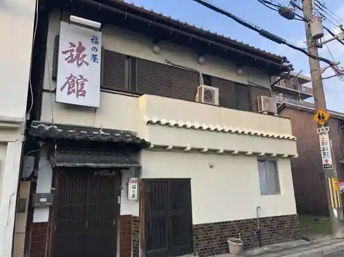
Fuku No Ya Ryokan
いそかね旅館
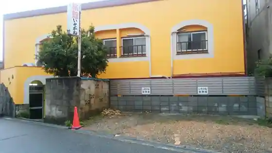
Isokane Ryokan
Ryokan inn in Isonohigashi, Yamatotakada with parking and long stays.
一棟貸し「Ａｕｂｅｒｇｅ Ｔｓｕｋｉｙａｍａ」 ＾
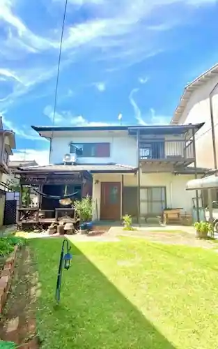
Hitomune Kashi (Auberge Tsukiyama) ^
一棟貸し宿 ローカルプライド大和高田
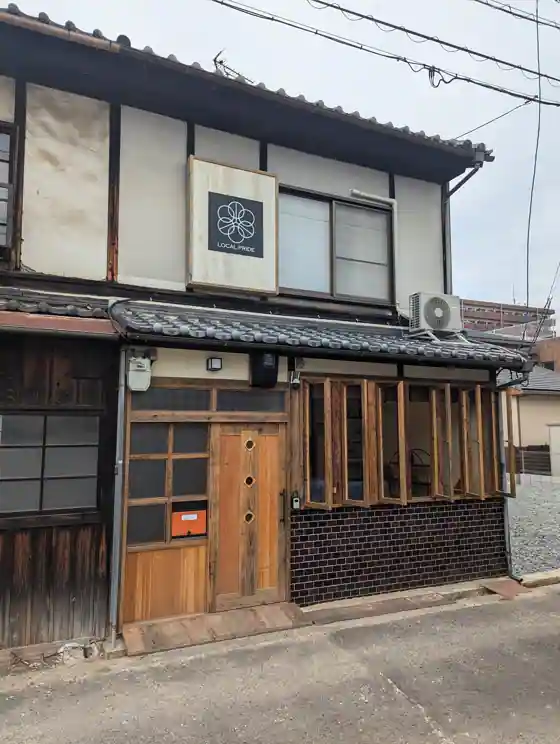
Hitomune Kashi Yado Rokarupuraido Yamatotakada
ＨＯＴＥＬ ＷＯＯ
HOTEL WOO
Inn in Nakaimasato, Yamatotakada with parking.
Dining
37+1
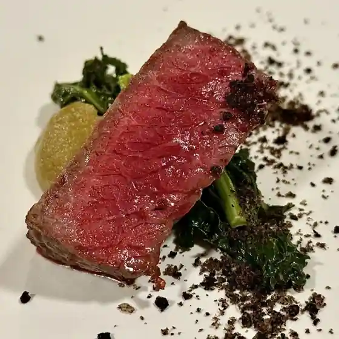
37+1
ひだるか屋
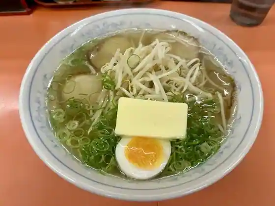
Hidaruka Ya
くろす
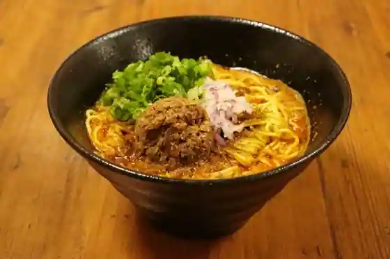
Kurosu
おダシと銀しゃり 中華そば 蒼し
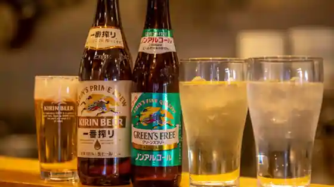
O Dashi To Gin Shari Chuka Soba Ao Shi
シュリンプチャップリン
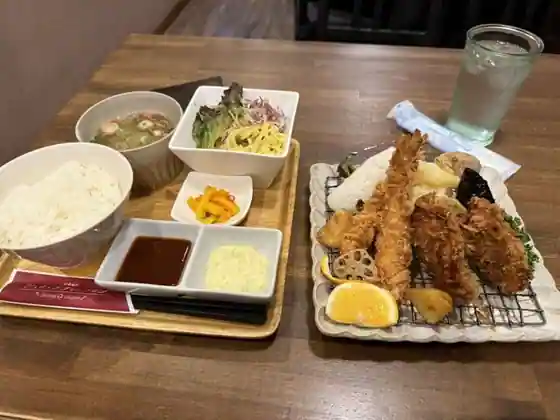
Shurinpuchappurin
ヴェルデ辻甚
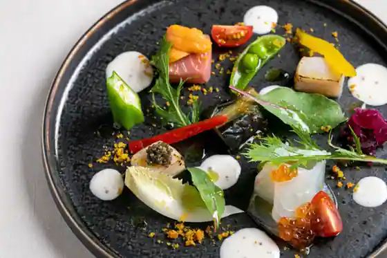
Verude Tsuji Jin
匠海
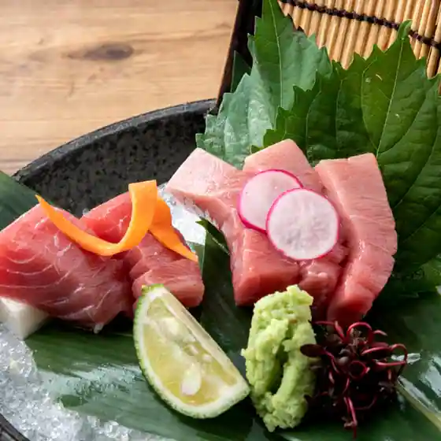
Takumi Umi
丸栄製菓
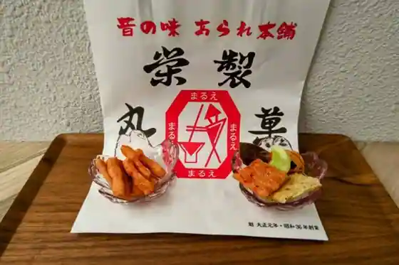
Maruei Seika
白鳳酒家
Hakuho Shuka
ジャンク屋 剣
Janku Ya Tsurugi
ちゃらりん
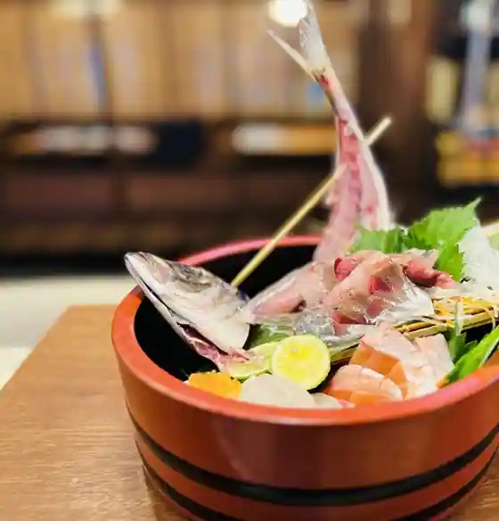
Chararin
うなぎ家 敏
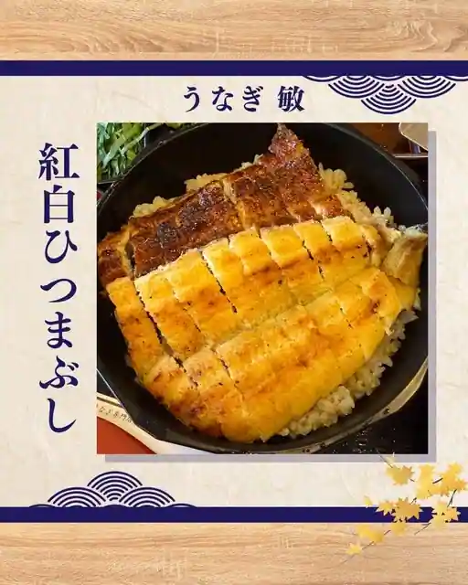
Unagi Ie Toshi
くらもと
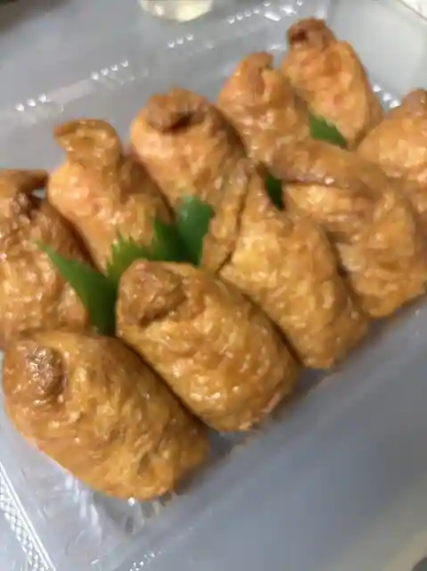
Kuramoto
オステリア・ジャルディーノ
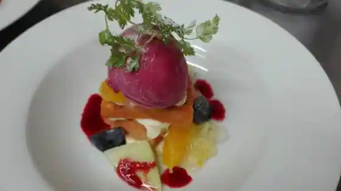
Osuteria Jarudino
寿司の有甚
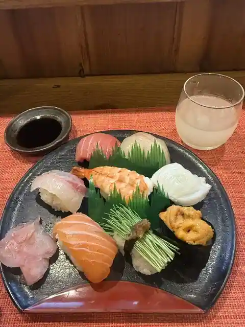
Sushi No Ari Jin
サグン
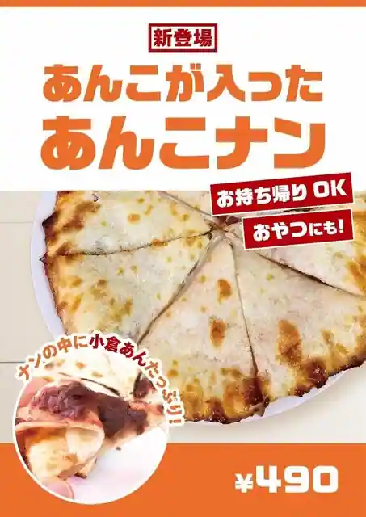
Sagun
ベーカリーメイ 大和高田店
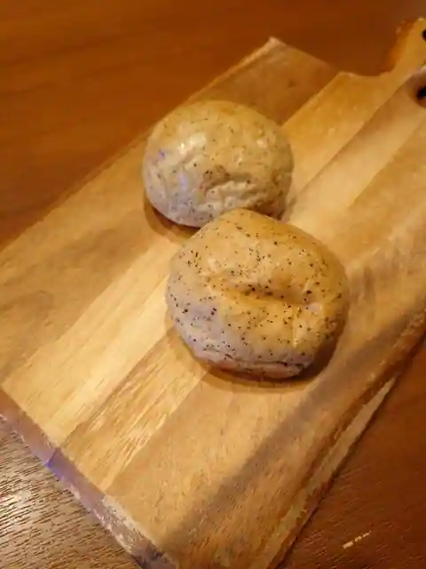
Bakery Mei Yamatotakada
古民家カフェ デイライト
Ko Minka Cafe Deiraito
飛行船
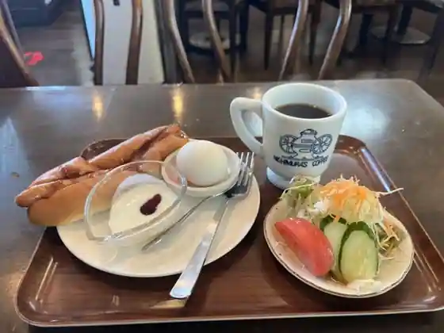
Hikosen
patisserie piro
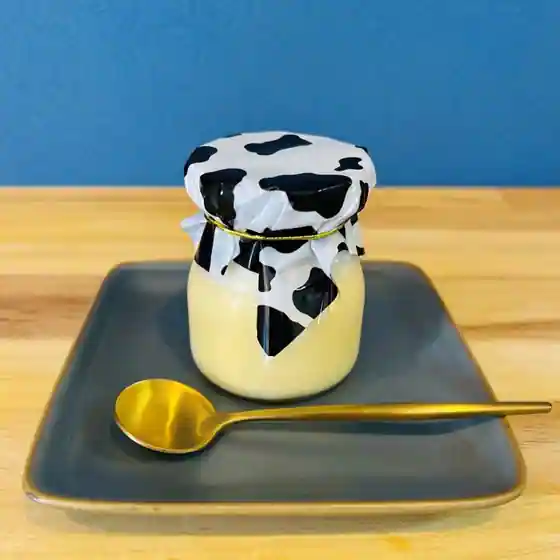
patisserie piro
串カツ ひゃっぽん
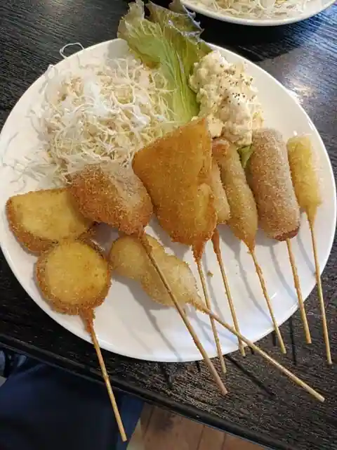
Kushi Katsu Hyappon
ふくみみ cafe
Fukumimi cafe
ヴィラージュ・アキヨシ
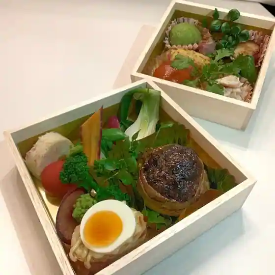
Villa Ju Akiyoshi
ポムドール
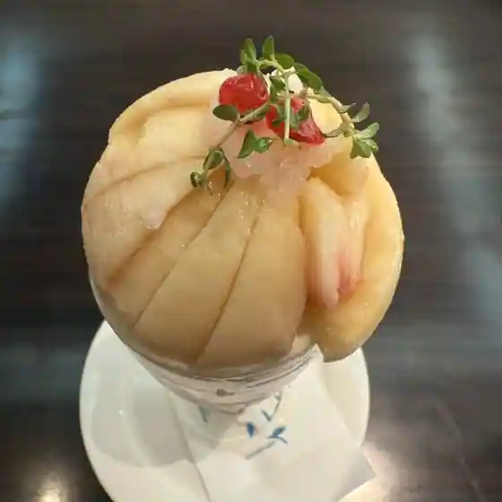
Pomudoru
Sights
Daichu Park
Tsukiyama Burial Mound

Ryuo Miya (Ishi Sono Za Taku Mushi Tama Shrine)

Tenma Shrine (Yamatotakada)

Sen Ritsu Tera

Meisho Tera
Benten Shrine (Yamatotakada)
Kasuga Shrine Daichu (Yamatotakada)
Noguchi Inari Shrine (Yamatotakada)
Ten Shrine (Yamatotakada)
Tora Bai no Haka
Miroku Tera
Fudo In (Yamatotakada)
Hase Honji
Hachiman Shrine (Yamatotakada)